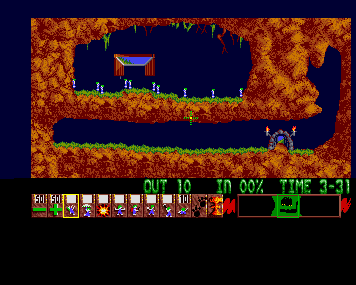
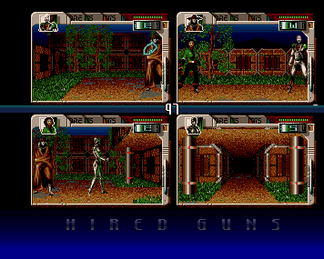
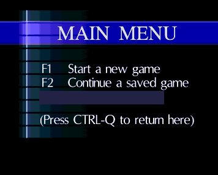

Open source · In development
CopperScreen
An open-source Amiga 500 emulator for running games and other Amiga software with your own Kickstart ROM and disk images.
Screenshots
View the gallery{kind=link}

Lemmings
In-game view with the skill selection panel.
{kind=link}

Hired Guns
Training area with four character views.
{kind=link}

Hired Guns
Main menu.
Supported machine
The current application supports this configuration.
- Machine
- Amiga 500 · PAL OCS
- Processor
- Motorola 68000
- Memory
- 512 KiB Chip + 512 KiB slow
- ROM
- Kickstart 1.3
- Floppy drive
- One read-only 880 KiB ADF
- Input and output
- Mouse, keyboard, stereo audio
ADF images in ZIP files are also supported. ECS/AGA, accelerators, hard disks and CopperStart are not supported by the current application. Unsupported configurations are reported explicitly.
Get started
Build with the .NET 10 SDK, then supply your own ROM and disk image. Neither is included.
- Build the application
Clone or download the repository, then run these commands from its root.
dotnet restore CopperScreen.slnx --locked-mode dotnet build CopperScreen.slnx -c Release --no-restore dotnet run --project CopperScreen -c Release --no-build - Choose your ROM and disk
Settings opens on first launch. Select a Kickstart 1.3 ROM and a standard ADF image, then start the machine.
- Check the documentation
Use the repository for configuration details and known limitations. Compatibility is still being developed.
Development
CopperScreen is written in C# and uses an Avalonia desktop interface and the Copper68k CPU interpreter. The emulator, disk library, tests and headless runner are open source.
Timing accuracy and compatibility are ongoing work. Some interlaced output remains unstable. A screenshot demonstrates a captured scene, not complete compatibility with that title.